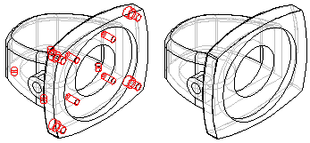
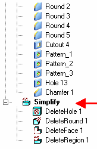
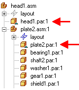

Simplifying parts
When working with an assembly, it can be useful to work with a simplified version of a complex part. For example, a part that contains numerous rounds, chamfers, and holes will process more slowly than a part from which these features have been removed.
The commands in the Simplify Model environment allow you to reduce the complexity of a part so that it processes more quickly when used in an assembly. The ultimate goal of part simplification is to reduce the total number of surfaces that make up the part.

You can also control whether the simplified version or the designed version of the part is displayed in the assembly.
Simplifying parts
You access the commands for simplifying a part using the Simplify command on the Tools tab in the Part and Sheet Metal environments. When you set the Simplify command, commands that can be used for simplifying a part are activated, and commands that are not appropriate for simplifying a part are disabled. For example, the commands on the Delete list on the Home tab in the Modify group are available for deleting faces, regions, and so forth.
After you have simplified a part, you can return to the Part or Sheet Metal environment with the Design command on the Tools tab.
You can also simplify a part by adding extruded and revolved protrusions, and extruded and revolved cutouts. Feature construction commands are included in the Simplify Model environment because sometimes it can be easier to simplify a part by adding one new feature than deleting many features. For example, you can construct one protrusion that obstructs several features, which then eliminates dozens of surfaces in one operation.
The features you create in the Simplify Model environment are added to the Simplify section of the PathFinder tab in the part document. You can also use the commands on the shortcut menu within PathFinder to manipulate the simplified features you construct.

Direct editing and simplifying compared
Many of the commands available when directly editing a part are also available when simplifying a part in the Simplify Model environment. Deciding whether to directly edit the model or simplify the model is determined by whether you want to have access to a simplified version of the part in an assembly or when creating a drawing.
If you want to use a simplified version of the part in an assembly or a drawing, you must set the Simplify command. No simplified version of the model is created when you directly edit a model.
Saving simplified parts to a separate file
You can save the simplified representation of the part out to a separate file using the Save Model As command on the File menu. The Save Model As dialog box allows you to specify a file name, folder location and file format. You can save the new document as a Solid Edge document or as a Parasolid body, and it is not associative to the original model.
Simplified parts in assemblies
When placing a part in an assembly, you can place it using the simplified version of the part, or the designed version of the part. When you set the Use Simplified Parts command on the Parts Library shortcut menu, the simplified version of the part is displayed when placing the part in an assembly. Any faces that you deleted when simplifying the part will not be available for positioning the part in the assembly. To make these faces available for positioning, clear the Use Simplified Part command before placing the part.
When working with simplified parts in an assembly, you can control whether the simplified version or as-designed version of the part is displayed. If you place the same part in an assembly more than once, you can control the display for each instance of the part individually. When you select a part in the assembly, you can use the Use Designed Part and Use Simplified Part commands on the shortcut menu to control which version of a selected part is displayed.
The Use Simplified Part command is not available for parts that were selected for an assembly feature, whether the parts were modified by the assembly feature, or not modified.
Simplified parts in PathFinder
The symbols adjacent to each part in the PathFinder tab in an assembly change to indicate whether the simplified version or designed version of the part is currently displayed.

Locating edges in simplified models
In some cases there may be edges in a simplified part that are not locatable. This occurs when the simplified version of the part creates edges that do not have corresponding design edges.
When this occurs you will not be able to locate an edge on a simplified part when placing a dimension or relationship, or when including an edge.
Location of these edges is purposely prevented to ensure stability of the model in downstream operations.
How do I
Edit an Auto-Simplify definitionCreate a single body using Auto-Simplify
Use the simplified version of a part in an assembly
Use the designed version of a part in an assembly
Create a simplified version of an assembly
Save a simplified assembly as a part
Controlling simplified assemblies
Learn more
Simplifying assembliesSimplified assemblies best practices
Look up more details
Auto-Simplify commandAuto-Simplify command bar
Create Simplified Assembly using the Visible Faces command
Create Simplified Assembly using the Model command
Enclosure command
Duplicate Body command
Simplify Assembly command
Save Simplified As command
Use Simplified Parts command
Use Simplified Assemblies command
Simplify Model command
Update Simplified Assembly command
Save Simplified Assembly As dialog box
Simplified Assembly Visible Faces Options dialog box
Design Assembly command
Use Designed Assembly command
Use Designed Part command
Design Model command
Create Simplified Assembly Visible Faces command bar
Create Simplified Assembly Model command bar